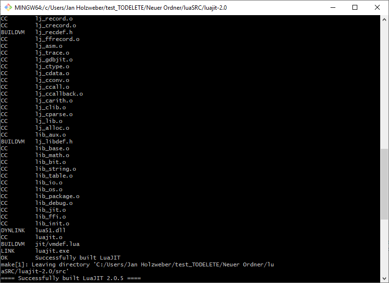
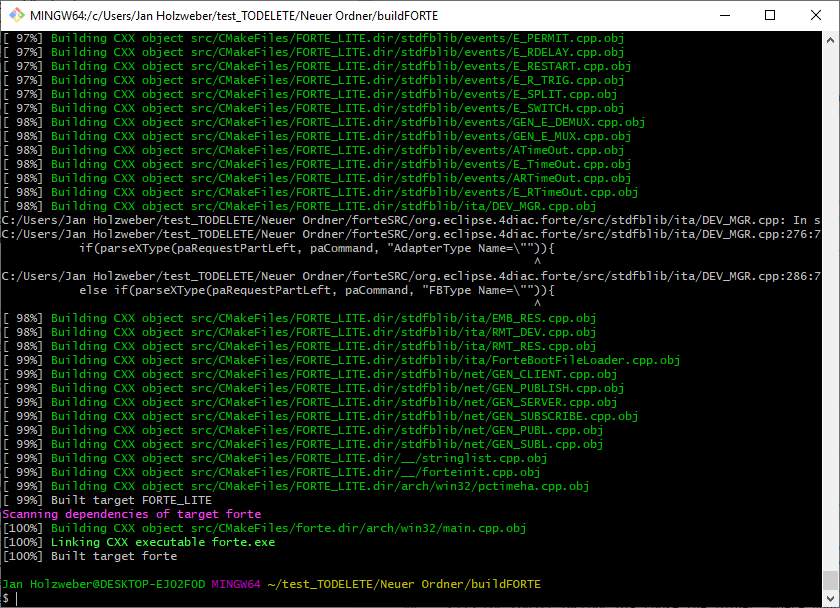

This page is part of a guide that gives a walk-through of the major 4diac IDE features.
In this tutorial, you will learn how to deploy and test your function blocks, without compiling and adding them to the 4diac FORTE .
Each time you created new function blocks, a new 4diac FORTE has to be compiled. This takes time, which is wasted just for compiling. Therefore, we have a feature called "Dynamic Type Loader". With this feature, new functions blocks can be deployed and tested without the need to compile them. Instead of directly compiled into the 4diac FORTE, the FBs are downloaded as LUA Code and a Lua-Interpreter, running inside the FORTE, interprets this code then.
Before we can use the Dynamic Type Loader, we have to compile a new FORTE with the Lua JIT (Just-In-Time Compiler). Therefore we are going to need a c-compiler. If you have done the tutorial, on how to create your own forte, everything you need should already be installed. Otherwise, follow the steps here.
We recommend using the minGW compiler.
Now we need to download the Lua source code and build the libraries. We are using this site. Open the folder, you want to build Lua in. Start Git Bash there and enter this commands:
The libs should be successfully created.
At first download the 4diac FORTE source from here or clone the 4diac FORTE repository.
Then create an folder where we are going to build our 4diac FORTE in. Open CMake and set the source folder, to the folder where your 4diac FORTE source files are in. Then set the build folder, to folder where you want to build the 4diac FORTE in.
Before configuring the Lua options, please enable all options, shown in this tutorial. Before pressing generate, we have to configure all Lua options.
You should have now successfully built your 4diac FORTE with the integration of the Lua JIT compiler.
Before you can use theDynamic Type Loader, you have to enable it in the 4diac IDE.
Everthing should be set up and you can deploy your FBs, like you learned earlier in the tutorial, without compiling a new FORTE.